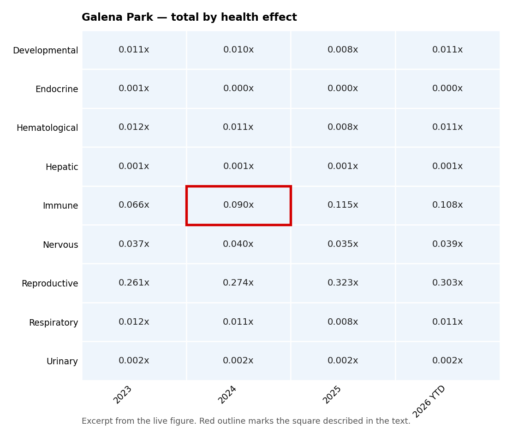

This view reorganizes the other health risk pollutants around geographic location rather than health system effected. Each location card shows one row per health system, and each cell is the combined total — the levels of every chemical that contributes to it, each divided by its screening level and then added together. This is the same “Total” reported for each health effect on the main dashboard, so the two pages agree.
A value below 1.00x means the combined exposure sits below the screening level for that body system; 1.00x is the screening level itself. The (n=) in each row label is the number of chemicals contributing to that total — Brain and Nervous system effects combine 8 chemicals, while Immune system and Reproductive system (or ability to have children) rest on a single chemical each, so totals are not equally well supported.
CHATTER analyzes air pollutants measured with automatic gas chromatograph (AutoGC) equipment. In Houston, CHATTER follows all fourteen hourly AutoGC monitors in Harris County — Clinton, Manchester East Avenue N, Houston Milby Park and Cesar Chavez (East End); Galena Park and Pasadena Richey Elementary School (Galena Park / Pasadena); HRM-3 Haden Road (Jacinto City / Cloverleaf); Channelview, Channelview Drive Water Tower and Lynchburg Ferry (Channelview / Lynchburg); HRM-16 Deer Park and Houston Deer Park #2 (Deer Park); and Wallisville Road and HRM-7 W Baytown (Baytown) — grouped into the six sections of the monitor map. Each section below is a tabbed card: click a monitor’s name to see its heatmap.
Each row is a health effect — a body system that can be harmed, such as the nervous system or the immune system. Each column is a period of time. The number in each square is the total for that health effect: the levels of every pollutant affecting that body system, added together and divided by the screening level, written as a multiple with an “x.”
The (n=) beside each health effect is how many pollutants were added together to make that total. Brain and Nervous system effects combine 8 pollutants, while Immune and Reproductive system (or the ability to have children) each rest on a single one, so the totals are not equally well supported by the data.
A clarifying example.In the Galena Park / Pasadena section, open the Galena Park tab and find the row for Immune and the column for 2024. The square reads 0.090x. That number means the combined level of the pollutants affecting the immune system was about 9% of the screening level — in other words, well below it.

Most of this tab is below the screening level. The color scale does not begin to darken until 0.75x, and nearly every total sits far under that, so most of the grid appears in the palest shade. That is the finding, not a rendering problem. The one row to watch is Reproductive (ability to have children) at Houston Milby Park in the East End section, whose single contributing pollutant, 1,3-butadiene, exceeds the screening level in several periods — those squares shade darker. No other monitor’s total comes close. Read the numbers to compare health effects and years to see changes over time.
For the general explanation of heat maps, see the Frequently Asked Questions.
East End · Clinton, Manchester East Avenue N, Houston Milby Park, Cesar Chavez
Galena Park / Pasadena · Galena Park, Pasadena Richey Elementary School
Jacinto City / Cloverleaf · HRM-3 Haden Road
Channelview / Lynchburg · Channelview, Channelview Drive Water Tower, Lynchburg Ferry
Deer Park · HRM-16 Deer Park, Houston Deer Park #2
Baytown · Wallisville Road, HRM-7 W Baytown